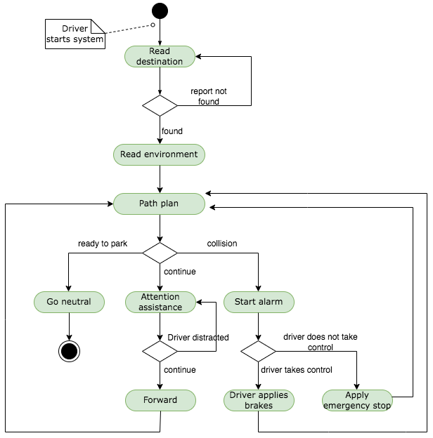
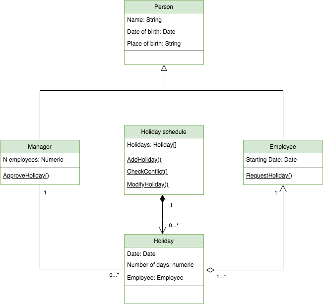

Applying a UML Model to a Program Implementation: UML in Practice
Driverless car activity diagram.
Design an activity diagram which shows the relationships and interactivity between the user’s behaviour within the driverless car.

Basic class diagram representing actions taken by an employee within an organisation.
Expand upon the activity diagram with the development of a class diagram using UML to support a system with basic employee-related functionality. This should include the retention of employee details and allowing an employee to book a day of annual leave.

Python implementation of the class diagram.
import sys
class Holiday():
pass
def __init__(self, date, ndays, employee):
self.approved = False
self.date = date
self.ndays = ndays
self.employee = employee
# Stores the schedule in a list
class HolidaySchedule():
holidays = []
class Person():
pass
def __init__(self, name, dob):
self.__name = name
self.__dob = dob
def get_name(self):
return self.__name
class Employee(Person):
pass
def __init__(self, name, dob):
Person.__init__(self, name, dob)
def request_holiday(self, date, ndays):
self.holiday = Holiday(date, ndays, self)
return self.holiday
class Manager(Person):
pass
def __init__(self, name, dob):
Person.__init__(self, name, dob)
def approve_holiday(self, holiday):
self.holiday = holiday
self.holiday.approved = True
return self.holiday
Employees = []
S = HolidaySchedule()
def main():
# Unexpected termination of the program is controlled with exceptions
try:
print("\n ENTER THE REQUIRED OPTION")
option = int(
input("============================================= \n \
"
"1: ADD A NEW EMPLOYEE \n \
2: BOOK HOLIDAY \n \
3: SHOW HOLIDAYS \n \
4: EXIT\n \
Option: "))
if option == 1:
surname = input("Enter the surname: ")
dob = input("Enter DOB [dd/mm/yyyy]: ") # DOB
E = Employee(surname, dob)
Employees.append(E) # Can save to permenent storage
main()
elif option == 2:
employee_id = int(input("Enter Employee ID: "))
if employee_id < len(Employees):
obj_e = Employees[employee_id]
doh = input("Enter holiday date: ")
n_days = int(input("Enter number of days: "))
holiday_req = obj_e.request_holiday(
doh, n_days) # Create request (holiday)
S.holidays.append(holiday_req)
else:
print("Employee is not in the system")
main()
elif option == 3:
for holiday in S.holidays:
print(holiday.employee.get_name() + " " + holiday.date)
main()
else:
print("Thank you for using the system!")
exit()
except KeyboardInterrupt:
sys.exit("\n\n Process terminated!\n")
# Run the main function
main()
Final reflections on UML
Since UML is intended to standardise the way an Object Oriented System is designed, it provides us with a great advantage. Reading and understanding the artefact and concepts becomes a more consistent task.
The various diagrams offered by UML allow us to represent different aspects of the system, especially structure and behaviour. This supports several stages of the software development life cycle (SDLC) and means that one model produced after the UML analysis can be used in one or more stages of the SDLC.